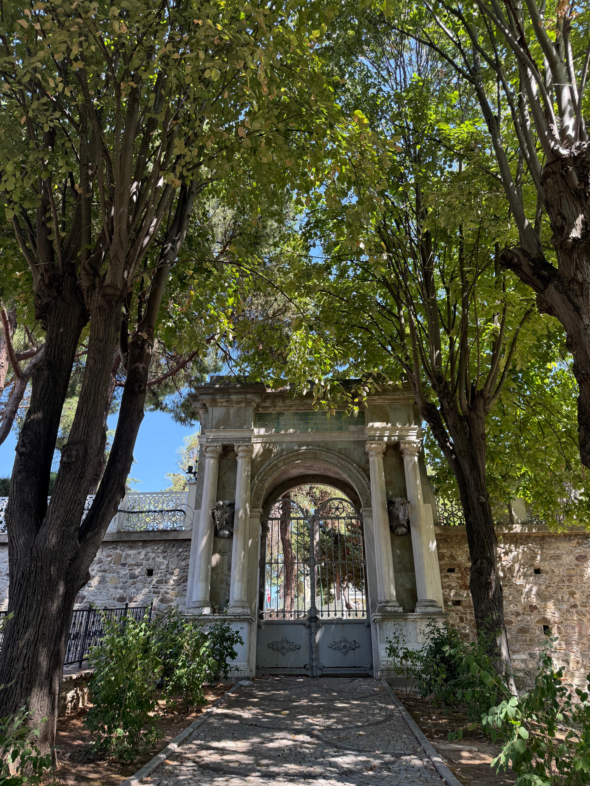
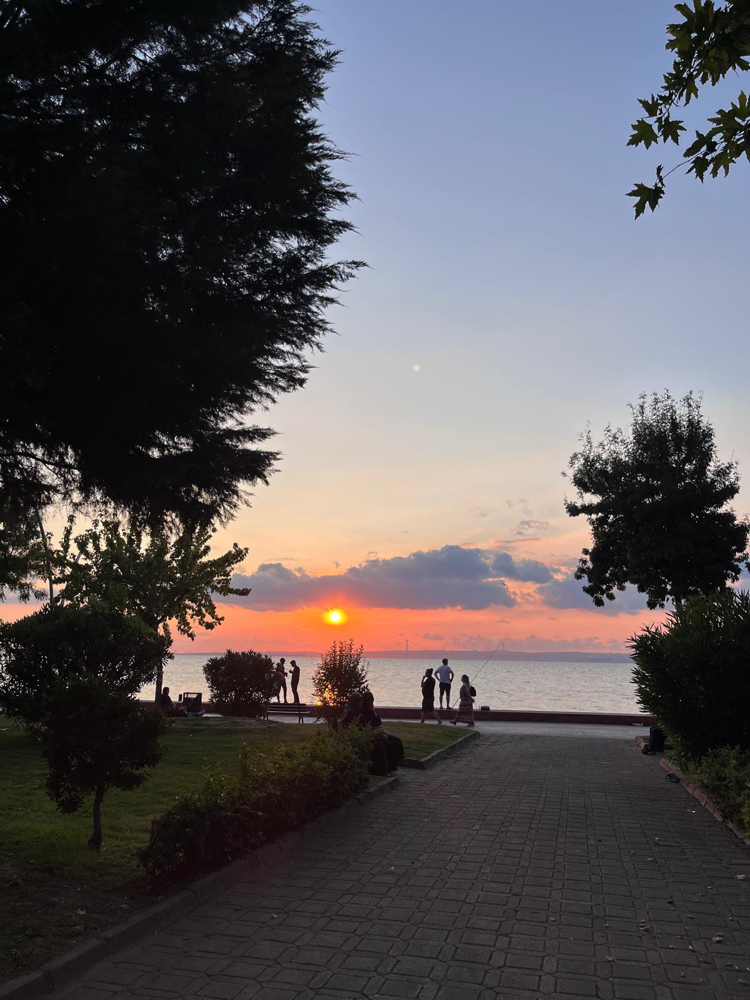
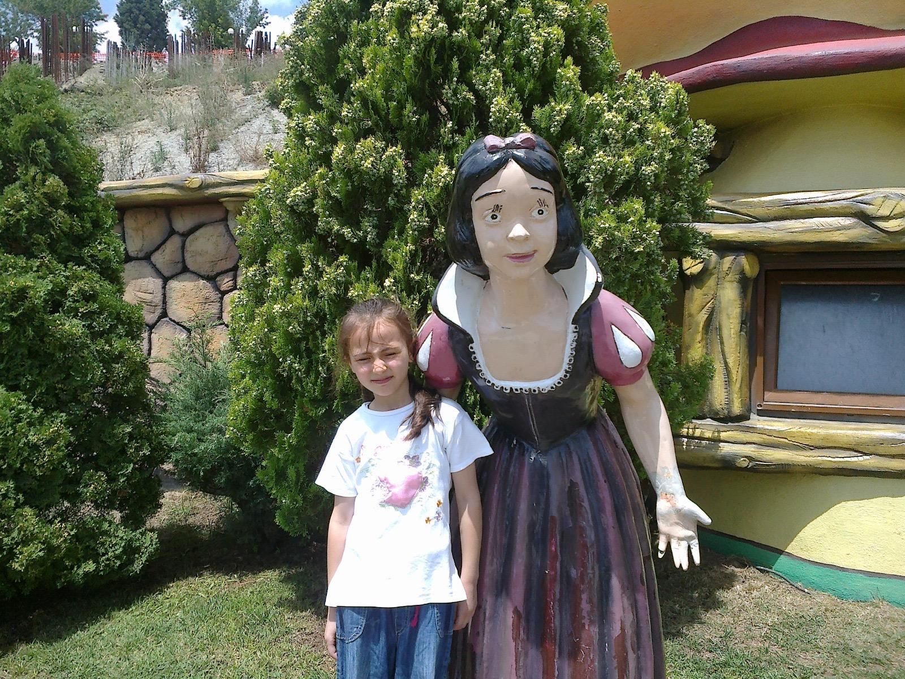

Kocaeli, Marmara Bölgesi’nde yer alan; tarihi, doğal güzellikleri ve sanayi alanındaki gelişmişliğiyle öne çıkan önemli şehirlerden biridir.
İzmit Saat Kulesi, Maşukiye, Değirmendere Sahili ve Kocaeli Bilim Merkezi şehirde gezilebilecek güzel yerlerden bazılarıdır.


